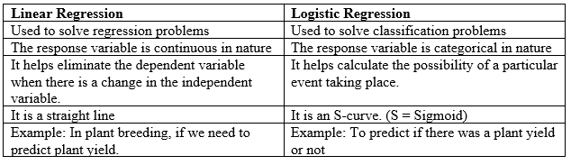
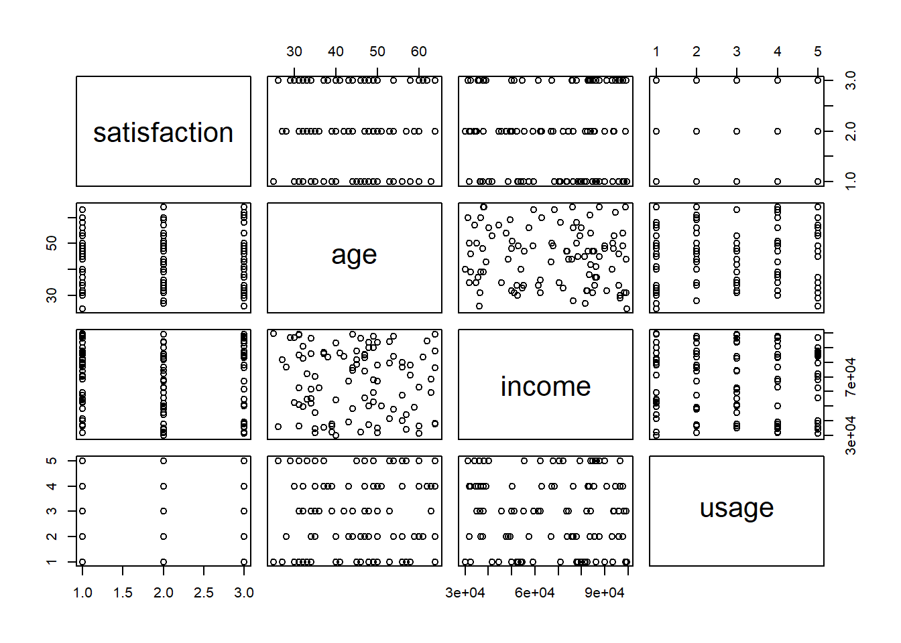

International Institute of Tropical Agriculture (IITA)
Introduction
Logistic regression, also known as the logistic model or logit model, examines how multiple independent variables relate to a categorical dependent variable. It predicts the probability of an event happening by modeling data to fit a logistic curve.
Logistic regression is a supervised machine learning algorithm that accomplishes binary classification tasks by predicting the probability of an outcome, event, or observation. The model delivers a binary or dichotomous outcome limited to two possible outcomes: yes/no, 0/1, or true/false.
Logistic regression is a type of statistical model that is used to predict the probability of a certain event happening. It may be used to determine if an email is spam or not, as well as diagnose illnesses by determining whether certain symptoms are present or absent based on test results from patients. It works by taking input variables and transforming them into a probability value between 0 and 1, where 0 represents a low probability and 1 represents a high probability.
For example, a researcher wants to measure the poverty status of farmers in a certain locality using their annual income and decided to classify them as poor (1) and not poor (0) based on a certain threshold. Then logistic regression could be used to determine the factors influencing poverty among the farmers using predictor variables like gender, age, farm size, household size, years of farming experience, etc.
The reason it is named “logistic” is that an S-shaped curve (sigmoid function) is produced when the input variables are transformed using a mathematical function known as the logistic function.
Advantages of Logistic Regression
The logistic regression analysis has several advantages in machine learning. These are highlighted below.
It is easier to implement machine learning models: Logistic regression is computationally efficient compared to many other machine learning methods, making it easier to implement, interpret, and train.
Optimal for linearly separable data: Logistic regression is specifically designed for binary classification tasks, effectively categorizing data into two distinct groups when the data is linearly separable.
Provides valuable insights: Logistic regression coefficients indicate both the strength and direction of the relationship between predictor variables and the outcome.
The Logistic Curve
Logistic regression is a technique used to model the relationship between a binary (dichotomous) response variable ( y ) and a numerical predictor variable ( x ). It fits a logistic curve, which is an S-shaped or sigmoid curve, to represent how ( y ) changes as ( x ) varies. This method is particularly useful when ( y ) represents binary outcomes coded as 0 (failure) or 1 (success), such as in cases of modeling population growth or other similar scenarios.
Logistic regression fits α and β, the regression coefficients. The logistic or logit function is used to transform an ‘S’-shaped curve into an approximately straight line and to change the range of the proportion from [0 – 1] to [(-∞) - (+∞)]
Binary Outcome: The dependent variable should be binary in nature, i.e. it should take on one of two possible vales coded as 0 and 1, “success” and “failure”, “yes” and “no”.
Independence of Errors: This implies that the error for each observation in the dataset should not be related to the error for any other observation. If violations of independence are detected, this may indicate the need to consider a different model or to account for correlation or clustering in the data using other methods such as mixed effects model.
Linearity of the Logit: This means that the relationship between the independent variables and the log-odds of the outcome is linear. This means that the effect of the independent variables on the log-odds of the outcome is constant across the range of the independent variables. Logistic regression can accommodate non-linear relationships between the independent and dependent variables by employing a non-linear log transformation of the linear regression framework.
Large Sample Size: A relatively large sample size is required to detect meaningful effects and to ensure stability of estimates in Logistic regression. A small sample size can lead to overfitting, where the model captures noise rather than the underlying signal in the data, and underpowered statistical tests, which may fail to detect significant effects due to inadequate sample size.
Outliers: The dataset is assumed to be free of extreme outliers and significant observations for the purposes of logistic regression. To deal with outliers, you can do any of the following:
Replace the outliers with a mean or median value
Eliminate the outliers
Keep the outliers and maintain a record while reporting the regression results.
No Multicollinearity: The assumption of no or low multicollinearity among independent variables is quite vital in logistic regression. When two or more explanatory variables have a high degree of correlation with one another, the regression model cannot obtain unique or independent information from them. This phenomenon is known as multicollinearity. A high enough degree of correlation between variables may make it difficult to fit and comprehend the model.
The acronym BILLION gives a useful way to remember the six conditions that makes up the Logistic Regression Model.
Comparison Between Linear Regression and Logistic Regression
The following are the comparison that exist between linear and logistic regression

Linear regression is not suitable for binary dependent variables due to several reasons. Firstly, the distribution of the binary variable ( Y ) is not normal; it follows a Bernoulli distribution rather than a Gaussian distribution assumed by linear regression. Secondly, using linear regression may lead to incomparable results because the scale and interpretation of the left-hand side (the binary outcome) and the right-hand side (predictors) of the model are fundamentally different when applied to a binary outcome.
The difference between logistic regression model and a linear regression model is that the outcome variable in logistic regression is binary and dichotomous.
Models of Logistic Regression
There are basically 3 types of logistic regression model, these are:
Binary Logistic Regression
Multinomial Logistic Regression
Ordinal Logistic Regression
Binary Logistic Regression
Binary logistic regression belongs to the broader category of statistical models known as generalized linear models. What sets binary logistic regression apart from other models within this category is its specific application to dependent variables that have two distinct levels.
As seen above, binary logistic regression is suitable when the dependent variable has two categories, and the independent variables are either continuous or categorical. Binary logistic regression is used when we are trying to predict a dependent variable with only two outcomes (dichotomous variable), for example, yes and No.
Logistic regression has the coefficients of parameters like the linear regression and in the addition has the odd ratio which is the exponential of the coefficient.
Odd ratio is \(\varepsilon^{\beta}\)
The equation for binary logistic regression expression is as shown below:
Where \(log\frac{p}{1 - p}\) is the odd ratio (Dependent variables)
\(\beta_0\) = Constant or intercept term in the equation.
\(\beta_1\),…\(\beta_k\) are the logistic regression coefficients (Coefficient of variable )
\(X_1\)…\(X_k\) = Independent variables
\(\varepsilon\) = Error Term
Example
A sugar cane farmer wants to visually select seedlings to plant in another location. The decision is to select (1) or reject a seedling based on the number of stalks, height (m), stalk diameter, and seedling cane yield (kg). In this case, four of the explanatory variables are quantitative, one is qualitative and the response variable is dichotomous, therefore the logistic regression can the used for the analysis.
# read in datadat <-read_excel("Sugar cane.xlsx", sheet ="Sugar cane")head(dat) # print the first six rows
dat <- dat %>%mutate(across(c(Choice,Variety), factor)) #convert
The Logistic Model
model_log <-glm(Choice ~ Cane + Diameter + Height, data = dat, family = binomial)summary(model_log)
Call:
glm(formula = Choice ~ Cane + Diameter + Height, family = binomial,
data = dat)
Coefficients:
Estimate Std. Error z value Pr(>|z|)
(Intercept) -5.2139 15.5265 -0.336 0.7370
Cane 2.3901 1.1340 2.108 0.0351 *
Diameter -6.8924 4.9139 -1.403 0.1607
Height 0.8381 6.6179 0.127 0.8992
---
Signif. codes: 0 '***' 0.001 '**' 0.01 '*' 0.05 '.' 0.1 ' ' 1
(Dispersion parameter for binomial family taken to be 1)
Null deviance: 40.381 on 29 degrees of freedom
Residual deviance: 11.797 on 26 degrees of freedom
AIC: 19.797
Number of Fisher Scoring iterations: 8
Formula: The model predicts Choice (a binary outcome) based on three predictors: Cane, Diameter, and Height.
Family: The model uses a binomial distribution, suitable for binary response variables. Coefficients Intercept: The estimated intercept is -5.2139. This represents the log-odds of the outcome (Choice = 1) when all predictors are at their reference level (or zero). However, the high standard error (15.5265) indicates that this estimate is not statistically significant (p-value = 0.7370), meaning it is not reliable.
Cane: The coefficient for Cane is 2.3901, with a p-value of 0.0351, which is statistically significant (denoted by *). This suggests that for each one-unit increase in Cane, the log-odds of choosing the outcome (Choice = 1) increases by approximately 2.39. In practical terms, this implies that Cane has a positive influence on the likelihood of the event happening.
Diameter: The coefficient for Diameter is -6.8924, with a p-value of 0.1607, indicating it is not statistically significant. A negative coefficient suggests that as Diameter increases, the log-odds of the outcome decrease, but we cannot conclude that this effect is meaningful due to the p-value being above the common threshold of 0.05.
Height: The coefficient for Height is 0.8381, but like Diameter, it has a very high p-value (0.8992), implying it is not statistically significant. Therefore, Height does not appear to have a meaningful impact on the outcome.
Model Fit Information
Null Deviance: 40.381, which measures the difference in the likelihood of the model with only an intercept compared to the saturated model.
Residual Deviance: 11.797, which is considerably lower than the null deviance, suggesting that the predictors explain a significant amount of variance in the response variable. The degrees of freedom for residuals (26) suggests there are enough observations after accounting for the parameters estimated.
AIC (Akaike Information Criterion): 19.797, a measure used for model comparison, lower values indicate a better fit when comparing multiple models.
Among the predictors, only cane seems to have a statistically significant impact on the likelihood of the choice of seedling selected or not selected. In contrast, Diameter and Height do not appear to significantly affect the choice of seedling selected or not selected. The model does fit the data better than a null model, as indicated by the reduction in deviance, but the overall significance and impact of some predictors are weak.
The varImp function is used to help identify which predictors are contributing most to the predictions made by your model. From the result, cane has the highest importance score suggesting it s the most influential variable in the model.
Cane has an odd ratio of 10.91. This implies that for each unit increase in cane, the odds of the outcome are approximately 10.91 times higher, with a P-value of 0.0351 indicates it is statistically significant (evidence to suggest Cane has a meaningful effect on the outcome).
Diameter has an odd ratio of 0.0010. This indicate that for each unit increase in diameter, the odds of the choice of seedling made decrease significantly (close to zero).With a P-value of 0.1607 shows it is not statistically significant.
Height has an odd ratio of 2.3119, implying that for each unit increase in height, the odds of the choice of seedling made are increased by about 2.31 times. With a p-value(0.8992). It shows it is not statistically significant.
Hence, we can say that cane is a significant predictor of the choice of seedlings.
Multinomial Logistic Regression
Multinomial logistic regression (often just called “multinomial regression”) is used to predict a nominal dependent variable given one or more independent variables. Multinomial logistic regression is used when the dependent variable has more than two categories.
The equation for multinomial logistic regression is as shown below:
Let K be the number of possible outcomes.
Let P(Y=k|X) be the probability of outcome k given predictors X.
Let \(\beta_{kj}\) be the coefficient for predictor j in predicting outcome k
To predict the species of new flowers using a multinomial logistic regression model fitted on the iris dataset.This loads the library and the data.
library(nnet) data(iris) # Fit multinomial logistic regression model model <-multinom(Species ~ Petal.Length + Petal.Width + Sepal.Length + Sepal.Width, data = iris)
# weights: 18 (10 variable)
initial value 164.791843
iter 10 value 16.177348
iter 20 value 7.111438
iter 30 value 6.182999
iter 40 value 5.984028
iter 50 value 5.961278
iter 60 value 5.954900
iter 70 value 5.951851
iter 80 value 5.950343
iter 90 value 5.949904
iter 100 value 5.949867
final value 5.949867
stopped after 100 iterations
# Predict flower species for new data new_flo <-data.frame(Petal.Length =1.5, Petal.Width =0.3, Sepal.Length =4.5, Sepal.Width =3.1) predict(model, newdata = new_flo, type ="class")
[1] setosa
Levels: setosa versicolor virginica
When the predict() function is executed with the new data, it returns the species of the iris flower based on the provided measurements. The output is a predicted class label, which tells us that the new_flo belongs to setosa specie according to the fitted model.
Ordinal Logistic Regression
Ordinal logistic regression or (ordinal regression) is used to model the relationship between an ordinal response variable and one or more explanatory variables. It is used to predict an ordinal dependent variable given one or more independent variables. The explanatory variables may be either continuous or categorical. We explore how one or more independent variables relate to the probability of an ordinal outcome being categorized into a specific or higher category using ordinal logistic regression.
Ordinal Logistic Regression has assumptions which varies from the general logistic regression. They are listed below:
Assumptions
• The dependent variable is measured on an ordinal level.
• One or more of the independent variables are either continuous, categorical or ordinal.
• No multi-collinearity - i.e. when two or more independent variables are highly correlated with each other.
• Proportional Odds - i.e. that each independent variable has an identical effect at each cumulative split of the ordinal dependent variable.
\(P(Y \geq j)\) = the cummulative probability of the response variable within category j
\(\beta_{jo}\) = the threshold parameter for category j
\(\beta_{1}\), \(\beta_2\), …, \(\beta_{jp}\) are model coefficient associated with the predictor variables \(X_1\), \(X_2\), …, \(X_p\)
Example
Let’s use a hypothetical dataset where we predict customer satisfaction (ordinal variable: Low, Medium, High) based on factors like age, income, and product usage.
# Load necessary librarieslibrary(tidyverse)library(ordinal)# Simulated data (replace with your actual data)set.seed(123)data <-data.frame(satisfaction =factor(sample(c("Low", "Medium", "High"), 100, replace =TRUE), ordered =TRUE),age =sample(25:65, 100, replace =TRUE),income =sample(30000:100000, 100, replace =TRUE),usage =sample(1:5, 100, replace =TRUE))head(data)
satisfaction age income usage
1 High 47 73927 2
2 High 39 36600 4
3 High 45 87700 5
4 Medium 61 83517 2
5 High 32 82352 3
6 Medium 34 96153 3
This shows the data we will be using for this analysis
From here, we can see the sum of missing data and also the structure of the data.
plot(data)

From the image above, we can view the relationship between the four variables. Satisfaction and other variables indicate weak linear relationship, age appears more spread out across income and usage, while income is more continuous and could be spread across age and usage whereas, usage is discrete( limited set of values) due to its clear horizontal bands.
# Fit the ordinal logistic regression modellibrary(ordinal)
Attaching package: 'ordinal'
The following object is masked from 'package:dplyr':
slice
model <-clm(satisfaction ~ age + usage , data = data)model
formula: satisfaction ~ age + usage
data: data
link threshold nobs logLik AIC niter max.grad cond.H
logit flexible 100 -108.48 224.95 3(0) 5.13e-08 9.5e+04
Coefficients:
age usage
-0.005358 0.206033
Threshold coefficients:
High|Low Low|Medium
-0.2749 1.1276
# Summary of the modelsummary(model)
formula: satisfaction ~ age + usage
data: data
link threshold nobs logLik AIC niter max.grad cond.H
logit flexible 100 -108.48 224.95 3(0) 5.13e-08 9.5e+04
Coefficients:
Estimate Std. Error z value Pr(>|z|)
age -0.005358 0.017546 -0.305 0.760
usage 0.206033 0.129595 1.590 0.112
Threshold coefficients:
Estimate Std. Error z value
High|Low -0.2749 0.8794 -0.313
Low|Medium 1.1276 0.8869 1.271
Age is not a significant predictor of satisfaction (p = 0.76), indicating that age doesn’t have a substantial effect on satisfaction levels in this model.
Usage has a positive effect on satisfaction, but the relationship is not statistically significant at the 5% level (p = 0.112). This suggests that usage might have some influence on satisfaction, but the evidence is not strong enough to claim a significant effect in this model.
The thresholds describe the boundaries between the different levels of satisfaction, but they are not significantly different from zero, meaning there may not be clear boundaries between the categories in this model.
Summarily, neither predictor (age or usage) appears to significantly impact the ordinal outcome variable satisfaction based on this model’s result

{kind=link}
{kind=link}